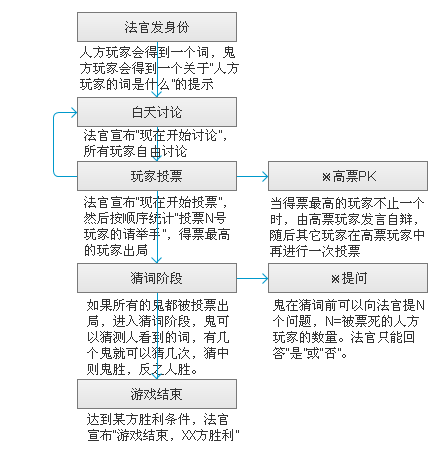

游戏分为两大阵营：水民和幽灵。
游戏开始时，每个玩家都会得到一个词，每个幽灵玩家会得到一个关于“水民词牌”的提示。一般会是水民词牌的类别,或者是描述.
玩家知道自己的身份。
A.幽灵
1.介绍 : 游戏中的少数，努力存活至总数不少于人即可取胜。
2.技能 : 投票
B.水民
1.介绍:游戏中的大多数，通过讨论和投票找出幽灵。
2.技能:投票/提问/猜词
技能说明
投票:白天才允许投票.在法官宣布投票以后,每个人都有投票选出自己心中幽灵的权利,但是只有一票,也可以不投.投票过程中不允许改票.
提问:幽灵被全部找出来以后,可以向法官提问.提问问题的个数为幽灵的数目+1.如一个幽灵,可以提两个问题.两个幽灵,可以提三个问题.以此类推.幽灵提问的时候.法官只能回答是和不是.
猜词:提问结束以后,幽灵要向法官回答水民手中的卡片是什么.猜词只有一次.猜对了就是幽灵获胜,猜错了就是水民胜利
游戏分为描述/讨论/投票/猜词四个阶段。其中每天指的是”讨论和投票”两个阶段.天数和幽灵的个数有关系.如有两个幽灵,就必须有两天.任意一天有水民被错投死,幽灵胜.
描述阶段:所有玩家依次描述自己手中的卡片
讨论阶段：玩家可以自由发言,讨论出投票人选。讨论阶段结束以后进入投票阶段.
投票阶段：所有玩家投票指认心中的幽灵，法官按顺序统计每个玩家的得票数，得票最多的玩家出局。
猜词阶段:当所有的幽灵都被投票出局时，幽灵有一次猜测水民的词的机会，猜中则幽灵胜.猜词之前,幽灵可向法官提问.

幽灵：
1.任意一天有水民被错投死,幽灵胜.幽灵胜利。
2.幽灵出局,但是猜出来了水民的卡片,幽灵胜利.
水民：所有幽灵出局，并且未猜中水民的卡片.
游戏可由4-14人同时进行。
| 总人数 | 幽灵数 |
| 4-5 | 1 |
| 6-8 | 2 |
| 9-11 | 3 |
| 12-14 | 4 |